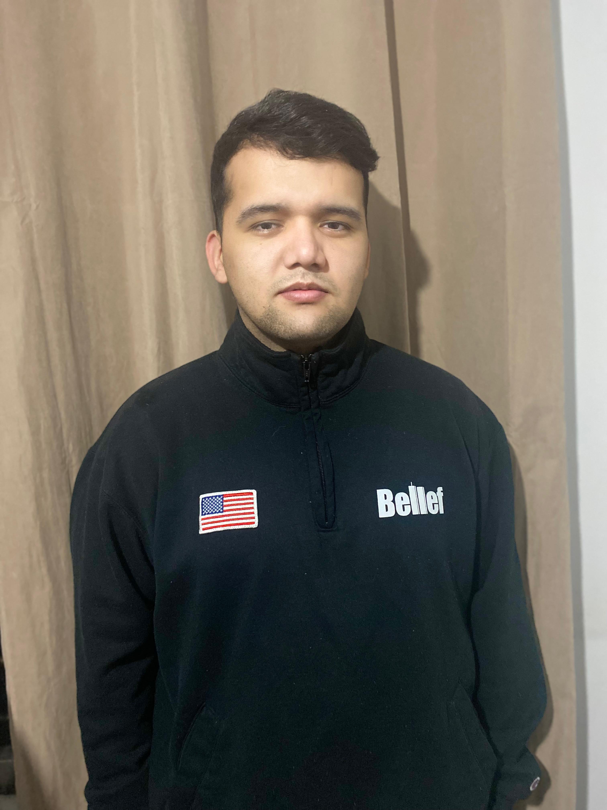

curriculum vitae

Andres Mera
Perfil Profecional
Proactivo y orientado a resultados, con habilidades
para trabajar en equipo y resolver problemas de manera creativa y efectiva.
Datos Personales
- Nombre:Andres Camilo Mera Agredo
- Direccion: lira 140 dpto 306
- Comuna: Santiago Centro
- Teléfono: +56947905980
- Correo Electrónico: camiiloagredo@gmail.com
Experiencia Laboral
administre una Taberna desde el 2014 hasta el 2016 fui instructor de canotaje (Deporte extremo)desde 2016 hasta
2019,
luego viaje a chile donde actualmente trabajo de Garzon en el restaurante Nueva China Prémium
Educacion
- cursé la enseñanza basica en la Institución San Antonio de Padua (Colombia)
- Enseñanza media en el Instituto Promocion social (Colombia)
- Técnico en sistemas en el Instituto Codespa
- Técnico en Gastronomía en el Instituto Sena
Referencias
Nueva China
Este es mi portafolio